Vánoční focení
Vše, co potřebujete před focením vědět.
Ateliér v Lovosicích, Terezínská 1111, 1. patro nad cukrářskými potřebami Lilie.
Max. 5 min předem. Pozdní příchod = kratší focení. Celé focení trvá 30 min + 5 min na převlečení.
Na focení choďte prosím zdraví. Chráníme se tak navzájem – nemocné děti navíc špatně spolupracují.
Náhledy do 5 dní. Po vašem výběru záběrů posílám upravené fotky v plném rozlišení na e-mail do dalších 10 dní.
1 700 Kč / 5 záběrů, každý další 280 Kč převodem. Základní částka hotově na místě. Dárkový poukaz nelze uplatnit.
Ateliér není hřiště. Nenechte děti běhat, skákat po gauči ani sahat na techniku.
Průběžně vám ukazuji výsledky. Vlasy, postoj, úsměv – během focení lze vše změnit, po focení už ne.
Pokud zjistíte, že nemůžete přijít, dejte mi vědět co nejdříve.
Zajistěte, aby děti neměly nalepené nebo špatně smyté tetovačky a malůvky – neretušuji je.
Béžová, krémová, olivová, vínová nebo zlatá. Bílá či černá také nevadí. Vyhněte se křiklavým barvám a výrazným nápisům.
Inspirace oblečením
Zlatá a zemité barvy – ideální volba k vánočním světýlkům
Pro vánoční focení doporučuji ladit oblečení do jemnějších, zemitých barev – béžová, krémová, hnědá, olivová, vínová, tmavě zelená či zlatá krásně zapadnou k teplým světýlkům ve scéně. Nemusíte pořizovat nic speciálního, postačí sladit kousky, které už máte doma. A pokud sáhnete po bílé, černé, tmavě modré nebo stříbrné, vůbec nic se neděje – i tyto odstíny se dají dobře zkombinovat. Jen se zkuste vyhnout výrazným nápisům a křiklavým barvám, aby na fotkách nerušily.
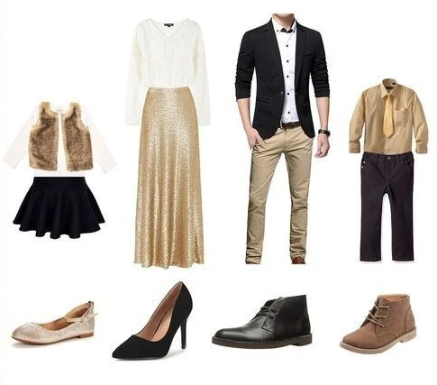
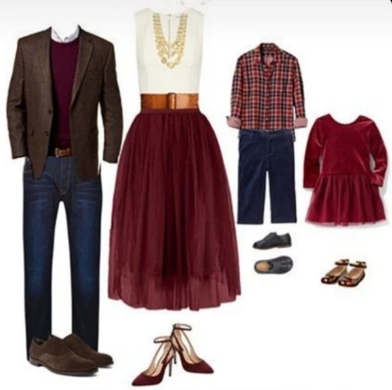
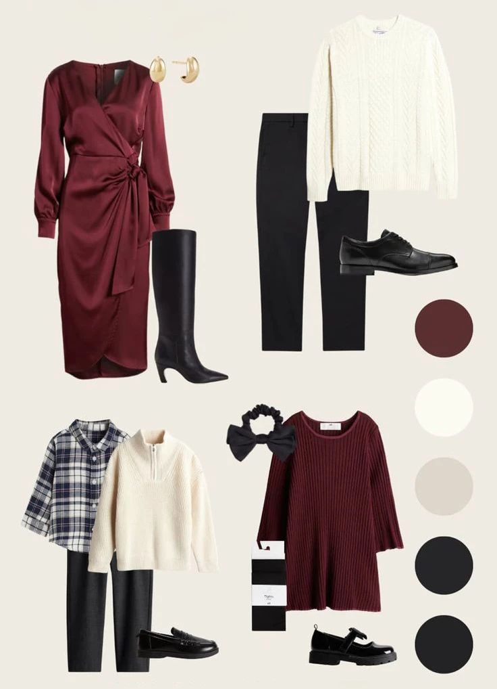

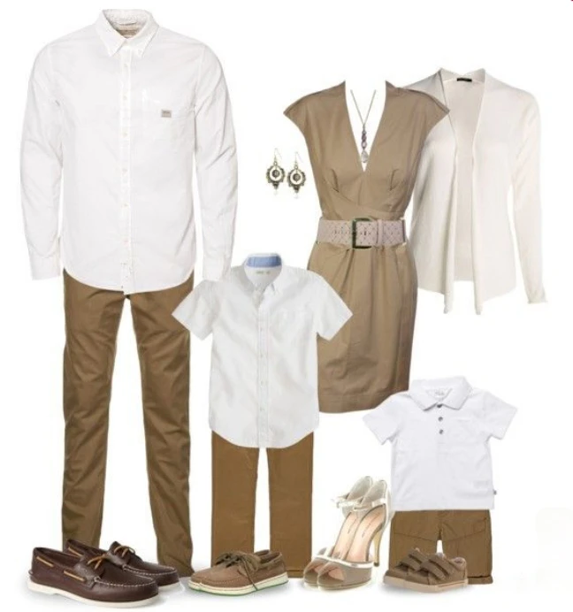
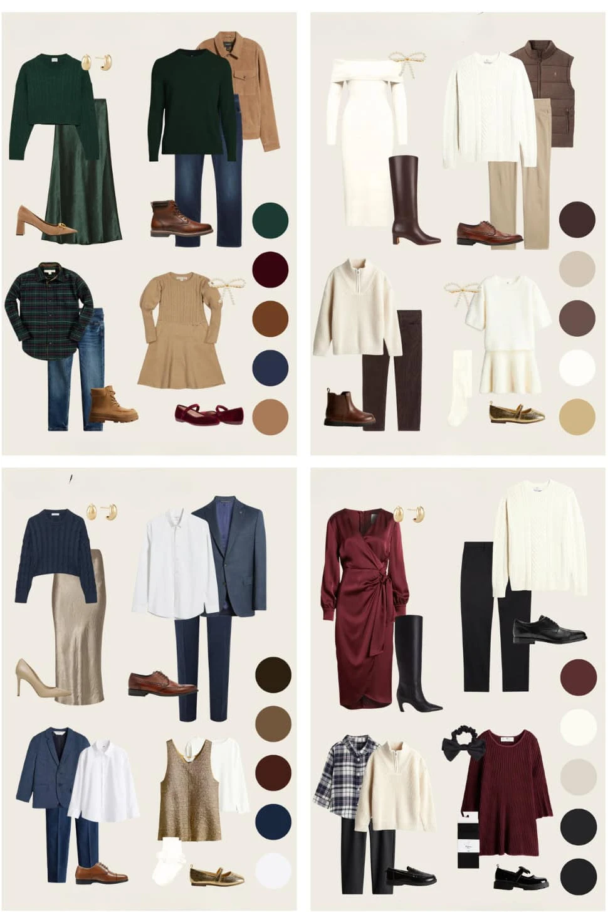
K zapůjčení v ateliéru
Šaty, kalhoty a košile si můžete půjčit přímo na místě – není třeba nic speciálně shánět.
Šaty
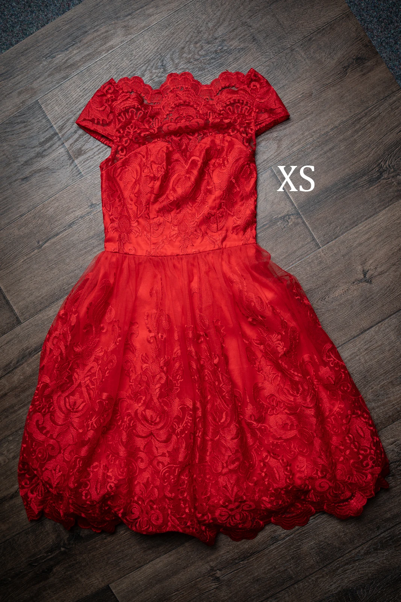
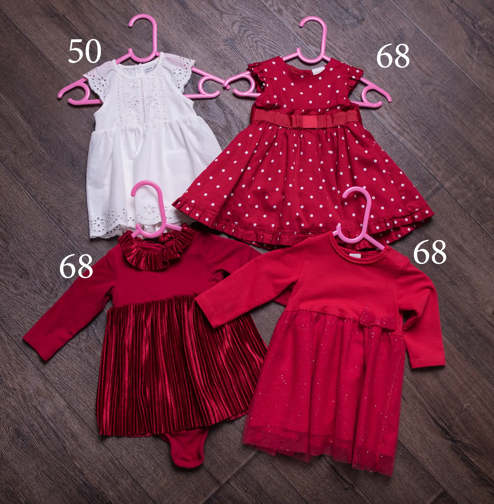
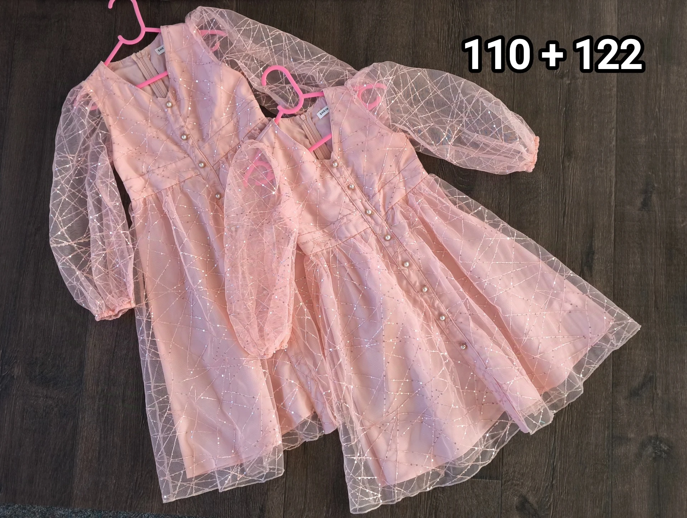
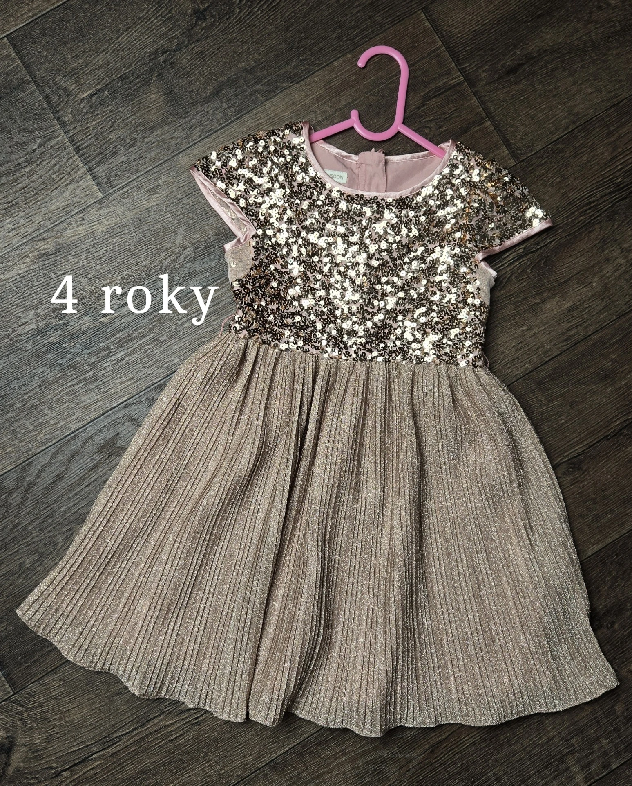
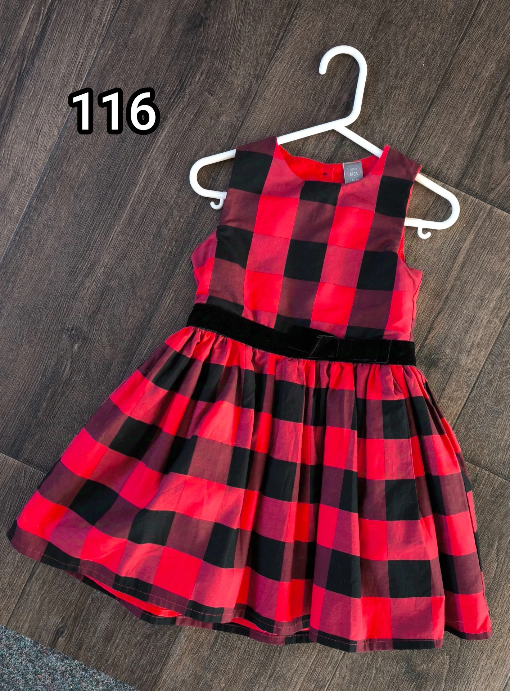
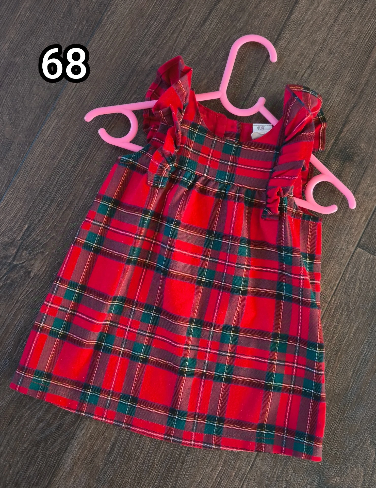
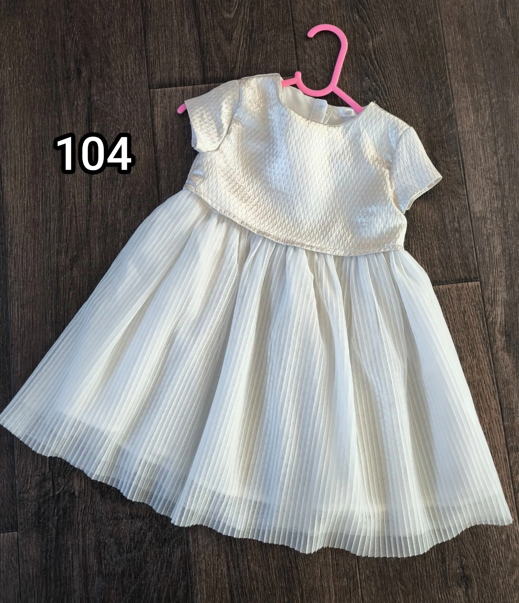
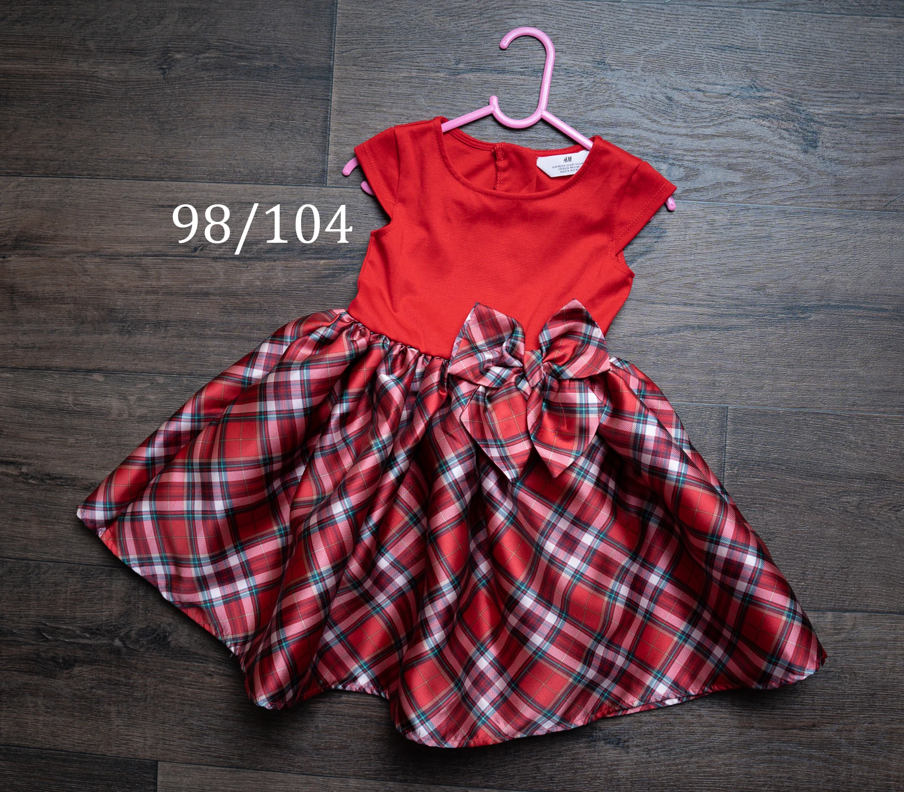


 - kopie.webp)
 - kopie.webp)
 - kopie.webp)